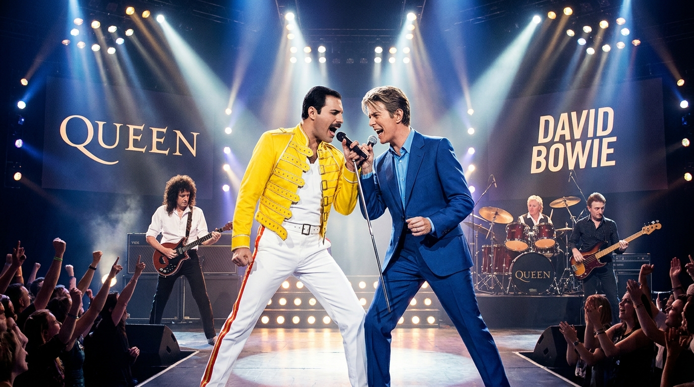
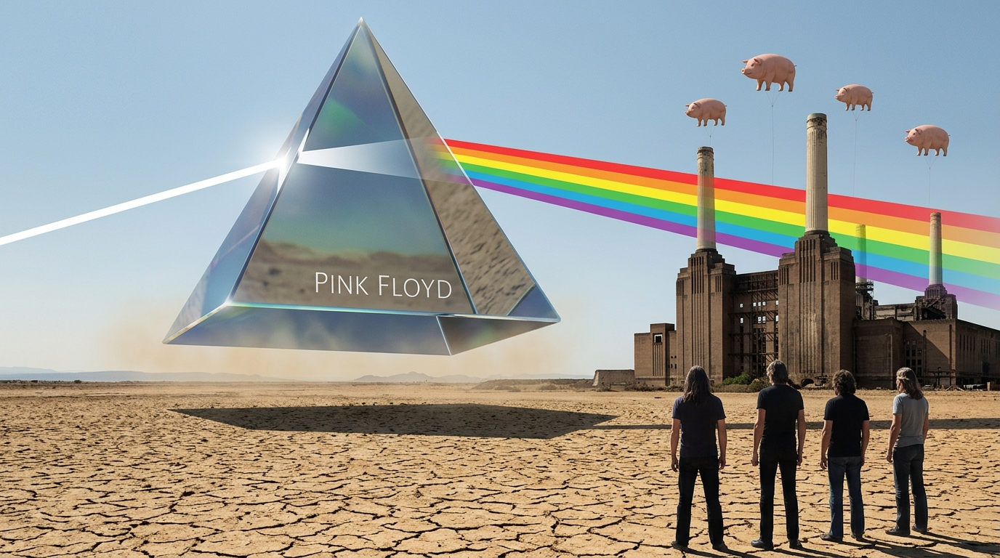
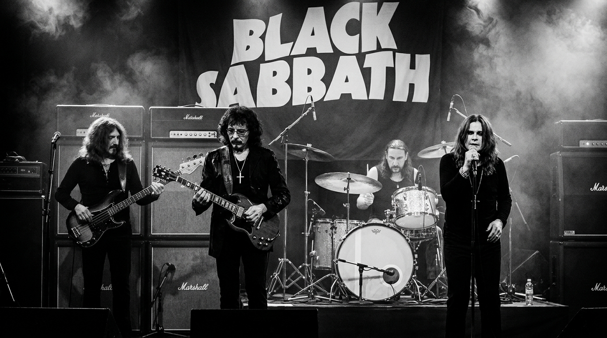
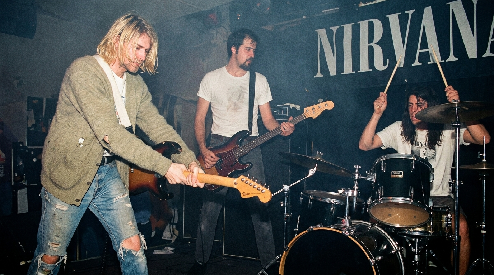
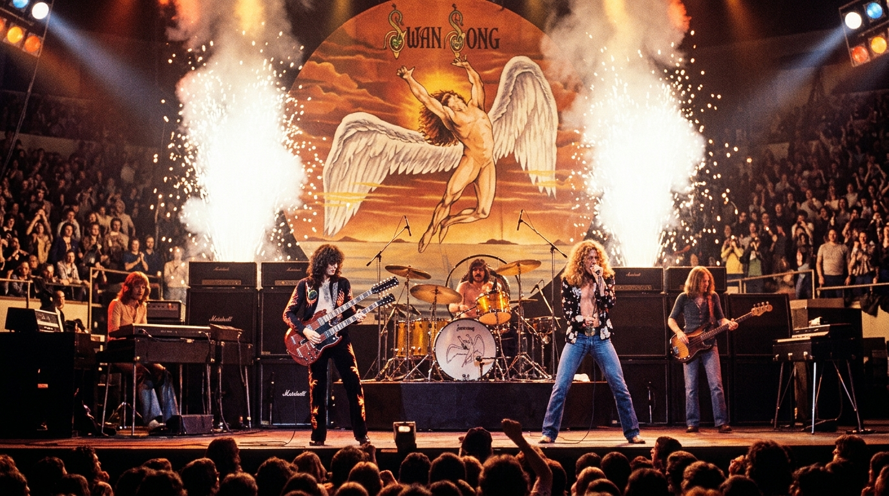
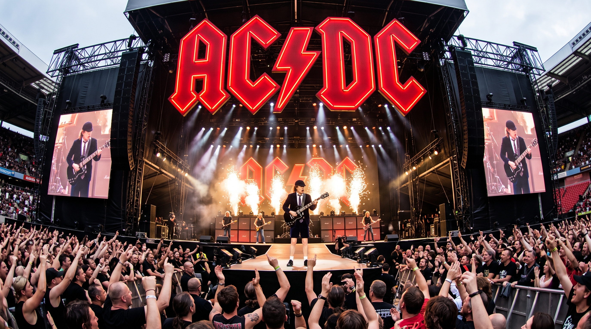

Queen & David Bowie
A colaboração lendária que gerou "Under Pressure". Uma noite de pizza, vinho e uma linha de baixo que mudou a história do rock.
Histórias, lendas e fatos bizarros da história do Rock'n'Roll

A colaboração lendária que gerou "Under Pressure". Uma noite de pizza, vinho e uma linha de baixo que mudou a história do rock.

A obra-prima "The Dark Side of the Moon" e seus efeitos sonoros inovadores – incluindo uma corrida desesperada pelos estúdios Abbey Road.

O acidente que deu origem ao Heavy Metal: Tony Iommi perdeu a ponta dos dedos e criou próteses caseiras, afinando a guitarra para um som mais pesado.

"Nevermind" e a revolução grunge. A capa icônica, o sucesso estrondoso e a lenda de Kurt Cobain que atravessa gerações.

O álbum sem nome, com símbolos místicos, que vendeu mais de 37 milhões de cópias – e a origem da eterna "Stairway to Heaven".

O uniforme escolar de Angus Young – uma sugestão da irmã que se tornou a marca registrada mais reconhecível do rock mundial.
Camiseta oficial das lendas do Rock com desconto especial para leitores.
Comprar na Amazon 🛒Descrição completa do fato histórico...